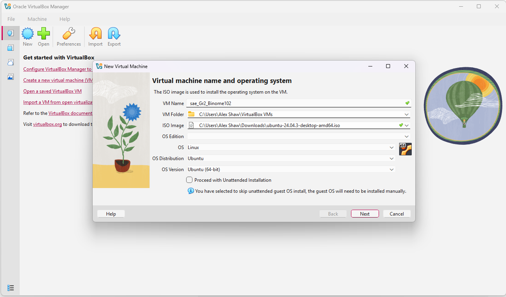
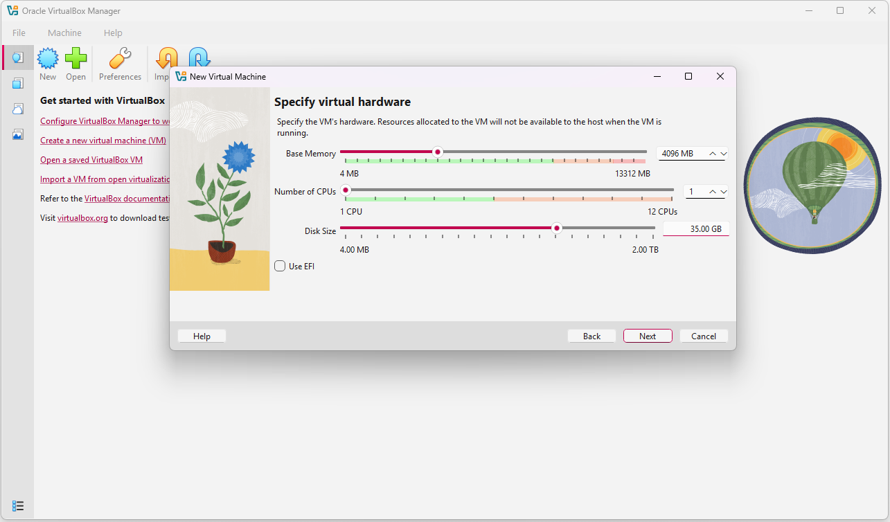
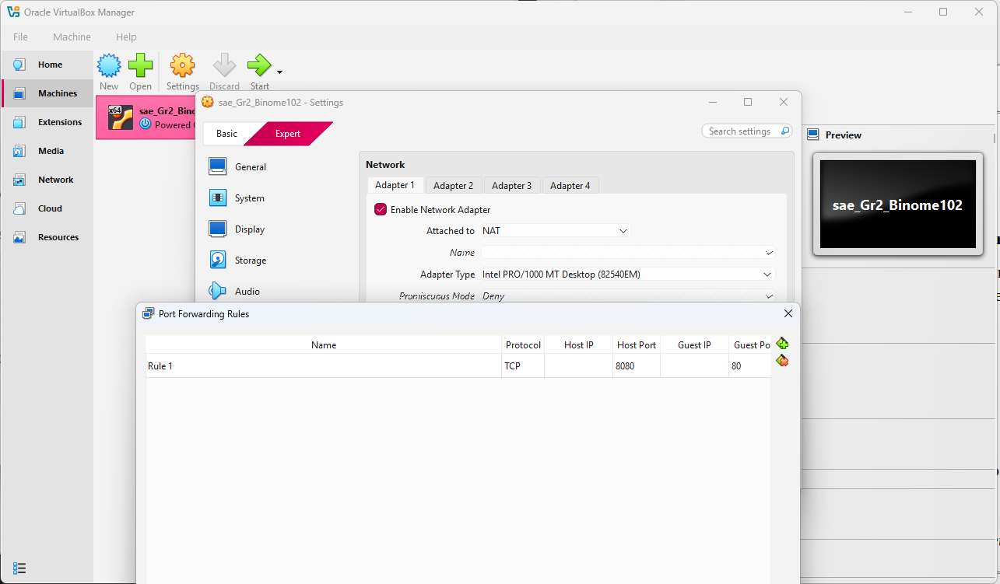
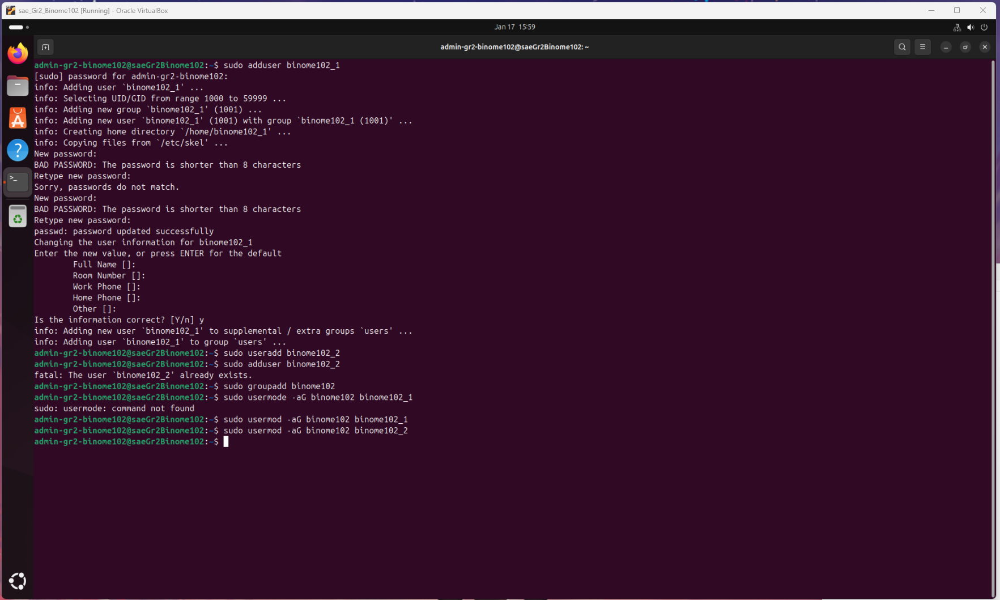
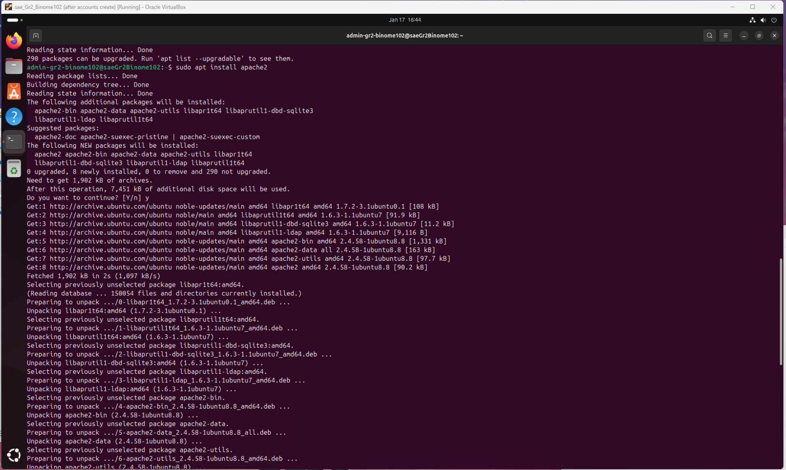
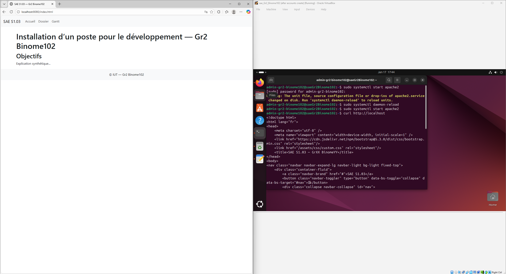
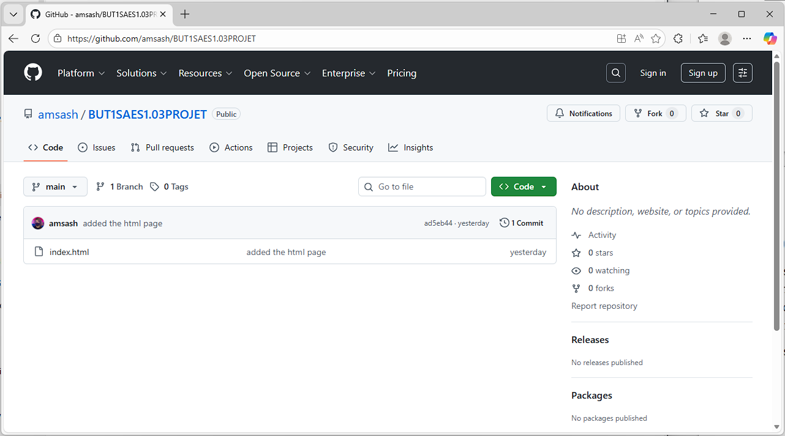

Installation d’un poste pour le développement — Gr2 Binome102
Rapport
1. Introduction
The objective of this SAE is to understand and use virtualization technologies in order to install a development workstation.
The project consists of creating a virtual machine, installing a Linux operating system, configuring user accounts, setting up a web server, and publishing the project report on this server.
The tools used in this project are:
- VirtualBox for virtualization
- Ubuntu Linux as the operating system
- Apache as the web server
- WebStorm for web development and deployment (with the help of GitHub)
2. Virtualization Concepts
Definition of virtualization
Virtualization is a technology that allows multiple operating systems to run on the same physical machine by sharing hardware resources such as CPU, memory, and storage.
Emulator, simulator, and virtual machine
- Emulator: Reproduces both hardware and software of another system (slow, used for compatibility).
- Simulator: Simulates behavior for testing or training purposes.
- Virtual machine: Runs a guest operating system using the host’s hardware via a hypervisor.
Type of virtualization used
In this project, a hosted (type 2) hypervisor was used.
VirtualBox runs on top of the host operating system and manages the virtual machine.
3. Virtual Machine Setup
Host environment
- Host operating system: Windows 11
- Virtualization software: VirtualBox
VirtualBox was chosen because it is free, easy to use, and supports snapshots and shared folders.
Virtual machine configuration
The virtual machine was configured with the following parameters:
- Operating system: Ubuntu 22.04 LTS
- RAM: 4 GB
- CPU: 1 core
- Storage: 35 GB
These values were chosen to ensure good performance while keeping resource usage reasonable.
 4. Network Configuration
Network mode choice
The virtual machine uses NAT with port forwarding.
This choice was made because the host computer is connected to a shared apartment Wi-Fi network, which may block direct communication between devices.
Port forwarding
Port forwarding was configured as follows:
- Host port: 8080
- Guest port: 80
This allows access to the web server from the host machine using:
http://localhost:8080
5. Linux System and User Management
Operating system choice
Ubuntu Linux was chosen for its stability, security, and large community support.
User and group creation
The following users and group were created:
- Administrator: admin_gr2_binome102
- Users: binome102_1, binome102_2
- Group: binome102
Lowercase usernames were used to comply with Linux naming conventions.
6. Web Server Installation and Configuration
Apache installation
The Apache web server was installed using the system package manager.
The service was enabled and started automatically.
Virtual host configuration
A dedicated virtual host was created to serve the project website.
The document root points to the project directory containing the HTML files.
HTTP access
The website is served using HTTP on port 80.
7. Website Development and Deployment
Technologies used
- HTML5 with semantic tags
- Bootstrap 5 for layout and responsiveness
Deployment method
A GitHub repo was used to share the website markup code between the host machine and the virtual machine.
This method was chosen for its simplicity and reliability.
8. Conclusion
This project made it possible to understand how virtualization works and how to configure a complete development environment.
Practical skills were acquired in Linux system administration, networking, and web server configuration.
This SAE provided a solid introduction to real-world deployment and troubleshooting scenarios.